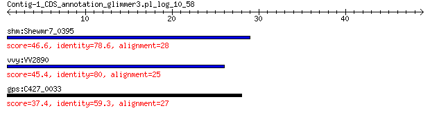

bitscore colors: <40, 40-50 , 50-80, 80-200, >200
 BLASTP 2.2.31+
Reference: Stephen F. Altschul, Thomas L. Madden, Alejandro A.
Schaffer, Jinghui Zhang, Zheng Zhang, Webb Miller, and David J.
Lipman (1997), "Gapped BLAST and PSI-BLAST: a new generation of
protein database search programs", Nucleic Acids Res. 25:3389-3402.
Reference for composition-based statistics: Alejandro A. Schaffer,
L. Aravind, Thomas L. Madden, Sergei Shavirin, John L. Spouge, Yuri
I. Wolf, Eugene V. Koonin, and Stephen F. Altschul (2001),
"Improving the accuracy of PSI-BLAST protein database searches with
composition-based statistics and other refinements", Nucleic Acids
Res. 29:2994-3005.
Database: all_orgs
14,240,465 sequences; 5,121,972,263 total letters
Query= Contig-1_CDS_annotation_glimmer3.pl_log_10_58
Length=48
Score E
Sequences producing significant alignments: (Bits) Value
shm:Shewmr7_0395 hypothetical protein 46.6 5e-06
vvy:VV2890 hypothetical protein 45.4 1e-05
gps:C427_0033 hypothetical protein 37.4 0.013
> shm:Shewmr7_0395 hypothetical protein
Length=42
Score = 46.6 bits (109), Expect = 5e-06, Method: Compositional matrix adjust.
Identities = 22/28 (79%), Positives = 24/28 (86%), Gaps = 0/28 (0%)
Query 1 MPNSAVKRRSADGSVGSPHVRVGNCQTL 28
+PNS VKR ADGSVGSPHVRVG+ QTL
Sbjct 14 IPNSEVKRNRADGSVGSPHVRVGHRQTL 41
> vvy:VV2890 hypothetical protein
Length=63
Score = 45.4 bits (106), Expect = 1e-05, Method: Compositional matrix adjust.
Identities = 20/25 (80%), Positives = 22/25 (88%), Gaps = 0/25 (0%)
Query 1 MPNSAVKRRSADGSVGSPHVRVGNC 25
+PNS VKR SADGSVG PHVRVG+C
Sbjct 39 IPNSEVKRSSADGSVGFPHVRVGHC 63
> gps:C427_0033 hypothetical protein
Length=42
Score = 37.4 bits (85), Expect = 0.013, Method: Compositional matrix adjust.
Identities = 16/27 (59%), Positives = 19/27 (70%), Gaps = 0/27 (0%)
Query 1 MPNSAVKRRSADGSVGSPHVRVGNCQT 27
+PNS VK S DGS+G PH RV +CQ
Sbjct 14 IPNSEVKHISGDGSLGFPHARVAHCQA 40
Lambda K H a alpha
0.319 0.133 0.410 0.792 4.96
Gapped
Lambda K H a alpha sigma
0.267 0.0410 0.140 1.90 42.6 43.6
Effective search space used: 125025732858